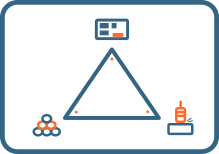
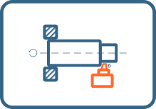
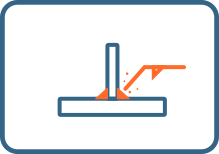
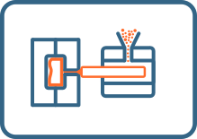
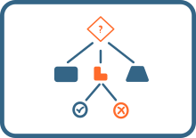
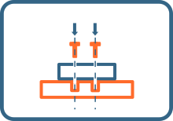
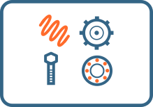

From Concept to Production — 11 chapters covering machining, sheet metal, welding, casting, plastics, 3D printing, process selection, and assembly. Written the way engineering actually works.
Some problems show up repeatedly in design reviews. A deep pocket with a narrow opening looks elegant — but a cutting tool long enough to reach that depth will chatter, deflect, or break. A simple enclosure quoted at 2× expected cost. An assembly where every component fits in CAD, but the largest one is wider than the access opening. None of these are obvious in CAD. All of them are obvious when you ask how it gets made.

Three factors determine whether your design succeeds or fails: material choice, manufacturing process, and design features. They're inseparable. Change one, and the other two must follow. Material determines possible processes. Process determines design constraints. Design requirements dictate material and process. Pull one thread, and the whole fabric shifts.

Machining is subtractive manufacturing — you start with raw material and remove material until you have the shape you need. Every feature is a cutting operation that requires time and tooling. When you design for machining, you're always thinking: every feature requires a tool to reach it, every surface must be accessible. Ask yourself — how will the machinist cut this?
A colleague sent me a sheet metal file to modify. I added two holes, sent it to the shop. Two days later, the machinist came to my desk: "These dimensions are wrong. Did you check the K-factor?" I didn't. K-factor was 0.5 — the software default — wrong for 2mm stainless steel. Twenty parts would have been scrap. I'd trusted the software. He knew the reality.

Welding shows up on almost every mechanical design project — structural frames, sheet metal enclosures, tube assemblies. But there's a difference between what looks easy in CAD and what happens in the shop. Compound-angle tube cuts needing extra setups, continuous welds on thin sheets that warp badly, or joints that welders simply cannot reach. These issues happen often and add real cost.
Casting creates geometries impossible with other processes — internal cooling passages in turbine blades, engine blocks with integrated water jackets, pump housings with complex flow paths. All formed in one piece during solidification. The practical workflow is catalogue first, custom last. Search industrial catalogues, pick options that might work, then adapt your design to fit.

The economics are compelling — complex geometry with integrated features, produced consistently at high volume, at a fraction of what machining would cost. A vacuum cleaner housing with ribs, bosses, snap features, and mounting points comes out of the mold ready to assemble. But plastic manufacturing has its own rules. Wall thickness, draft angles, shrinkage, flow paths — these aren't optional. They're built into the physics.
"We can just 3D print it" has become the modern equivalent of "we'll fix it in software." Sometimes true. Often dangerously naive. AM gives you geometric freedom that no other process can match. It does not give you free parts, fast parts, or parts with properties identical to conventionally manufactured components. The real question isn't "can we?" — it's "should we?"

You've spent the previous chapters learning how things are actually made. Now comes the real engineering challenge: choosing. This chapter gives you universal DFM principles — design decisions that reduce cost and improve manufacturability regardless of process — and a systematic method for selecting between processes when multiple options could work.

You've designed a beautiful part. Every dimension correct, every tolerance rational. Then someone has to put them all together, and everything falls apart. Here's a number that surprises most designers: assembly typically accounts for 40 to 60 percent of total product cost. Not material. Not machining. Assembly. The labor, the fixtures, the rework when something doesn't fit.

Glass, adhesives, seals, rubber profiles, fastener types, gas springs, sliders, locks, latches, levelling feet, handles. Components you'll specify in almost every design. Most engineering programs never mention them. Most BOMs are full of them. This chapter covers how to find them, select them, and design around them. Because when you're not manufacturing custom, these components drive your geometry.
Get notified when the print edition launches, plus new quiz topics and engineering resources.
Subscribe for Updates